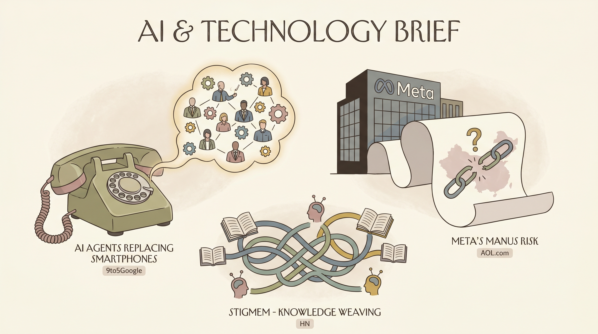

Why would I want an AI agent to replace my phone? - 9to5Google
两克伴AIGC日报
2026-05-04 星期一

本期关注：AI代理加速发展，Stigmem开源联邦知识平台打破知识孤岛实现共享，TrainForgeTester提供确定性场景测试，同时AI代理取代手机趋势显现，Meta面临中国Manus协议风险。
📰 行业动态
What's at stake for Meta if China kills its Manus deal - AOL.com
🔥 今日焦点
Stigmem，一款开源的联邦知识织构，旨在为AI代理提供共享、联邦的知识基础。其核心思想是，AI代理不再维持独立的记忆存储，而是将类型化、溯源标记的事实写入共享的织构中，并通过Ed25519签名节点握手实现跨节点复制。每个事实由七个元素组成：实体、关系、值、来源、时间戳、置信度和范围。这些事实是不可变的，一旦出现矛盾，系统会自动揭示。
Stigmem的重要性在于，它打破了传统AI代理知识孤岛的限制，实现了知识的共享与联邦。这种模式对于AI领域具有重要意义，因为它有助于提高AI代理的协作能力，促进知识的流动与整合。此外，Stigmem的开放性使得更多研究者可以参与到联邦知识织构的建设中，推动AI技术的创新与发展。
标题：TrainForgeTester：AI智能体确定性场景测试工具
TrainForgeTester是由alcray开发的一款开源场景测试运行器，专为AI智能体设计，旨在评估智能体在实际应用场景中的表现。该工具的核心功能是模拟公司特定的场景，让智能体在更为贴近实际的工作环境中执行任务，而非仅仅依赖通用基准测试。通过TrainForgeTester，开发者可以测试智能体在执行过程中可能出现的错误，如采取错误行动、跳过必要步骤、调用错误工具或传递错误参数等。
标题：Show HN：ISO 20022金融消息的加密收据权威性
核心内容概述：随着ISO 20022在全球范围内逐步取代SWIFT MT消息，金融机构在处理这些消息时，内部记录的日志仅作为声明而非确凿证据。NextGenRails开发的20022Validator工具，为ISO 20022 JSON消息提供SHA-384散列、Merkle承诺和RS256签名的JWS收据，确保消息零存储。收据可独立验证，无需保留，用户可随时使用jwt.io或token.dev工具，通过已发布的公钥进行验证。
📄 重点论文
**核心贡献**: 提出了一种名为CARE的系统性方法论，用于在科学领域内工程化大型语言模型（LLM）智能体，该方法涉及领域专家、开发者和辅助智能体，通过可重用的工件和分阶段的门控流程来规范行为、归一化、工具编排和验证。
**与AI Agent的关联**: 为AI Agent领域提供了系统化的方法论，有助于提高智能体的工程化水平，特别是在科学领域中的应用。
**核心贡献**: 提出了一种名为Crab的语义感知的检查点/恢复运行时，用于智能体沙箱，以支持故障容忍、即时执行、强化学习回滚分支和安全的回滚。
**与AI Agent的关联**: 为智能体沙箱提供了高效的检查点和恢复机制，有助于提高智能体的鲁棒性和可靠性。
**核心贡献**: 引入了Claw-Eval-Live，一个用于工作流程智能体的实时基准，它分离了一个可刷新的信号层，该层在发布之间更新，从而可以评估智能体对不断变化的工作流程需求或验证任务是否已执行。
**与AI Agent的关联**: 为智能体领域提供了一个实时基准，有助于评估智能体在真实世界工作流程中的表现和适应性。
🛠️ 产品推荐
Show HN: Using Tailscale with Apple's containerization stack是一款结合了Apple容器化技术和Tailscale SSH连接的解决方案。该产品通过Apple的容器化命令行工具构建Alpine Linux容器，并实现通过Tailscale SSH连接到容器，同时利用Apple Keychain存储Tailscale认证密钥。用户可在MacBook上创建容器运行应用，同事可通过Tailscale连接容器进行交互，而无需暴露MacBook的其他部分。此产品为技术从业者提供了一种安全、便捷的容器化应用部署与访问方式。
---
Show HN: Optical Design and Simulation in Matlab是一款由MathWorks团队开发的专注于光学设计和模拟的软件库。该产品利用MATLAB强大的计算能力，为用户提供了一个高效的光学系统设计和分析平台。通过该产品，用户可以轻松实现光学系统的建模、仿真和分析，有效解决复杂光学设计中的计算难题。其专业化的功能和便捷的操作，为光学工程师和科研人员提供了强大的技术支持，助力他们快速、准确地完成光学系统的设计和优化。
---
Show HN: Interpretable AutoResearch – Legible Agent Workflows是一款基于AI的自动研究平台。该产品通过可解释的代理工作流程，实现了对研究过程的可视化与可控化。它旨在帮助用户轻松理解和控制复杂的AI研究任务，提高研究效率。通过提供直观的界面和强大的AI能力，Interpretable AutoResearch助力用户快速定位问题、优化模型，并实现研究成果的复现。对于技术从业者而言，这款产品无疑是提升研究效率、降低研究风险的得力助手。